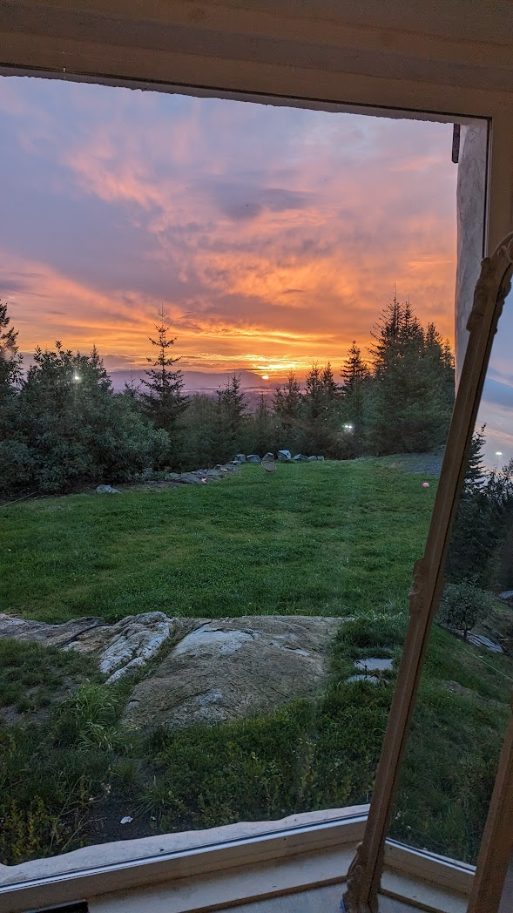

40 Acres
Private mountaintop property
5876 Stoltze Rd

Cowichan Valley, British Columbia
Sweeping valley views, rocky West Coast terrain, native arbutus character, and practical independence infrastructure in one remarkable setting.
Private mountaintop property
Efficient 1,282 sq ft home
Major solar generation
Strong energy storage
Low utility dependence
5876 Stoltze Rd offers a rare blend of privacy, natural beauty, and self-reliant living. Positioned high above the valley, the property captures exceptional light and long-range views while remaining within practical reach of everyday services.
Photo Essay


Aerial


Nature


House


Highlights


Forty acres create true separation and calm.
Valley and mountain lines with sunrise and sunset value.
A distinct West Coast landscape character.
Solar, battery, and utility independence foundation.
Recreation and services remain within reach.
Approx. 15+ kW generation capacity.
Approx. 40 kWh storage for resilience.
Private well and septic system in place.
Configured for practical year-round comfort.
Ready for modern use while staying independent.
Designed to reduce ongoing utility reliance.
Exact dates and scope can be updated as final records are compiled.
A rare balance of wilderness feel and practical convenience: near trails, river access, and Lake Cowichan recreation, with schools, shopping, and hospital services reachable within normal planning distance.

The property is represented as F-1 zoning. Future use and flexibility should always be confirmed directly with the appropriate local authorities and qualified professionals.
Yes. The current setup emphasizes independent systems and low utility dependence.
Internet options can be discussed based on current service availability and setup.
Access is practical, with route details to be confirmed in a full information package.
The infrastructure is designed to reduce dependence; specifics can be provided during review.